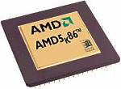
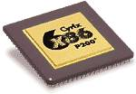
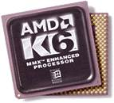
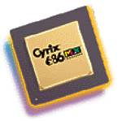
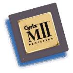
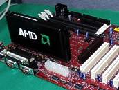

AMD 5x86-133-P75. Этот процессор появился после того как Intel отказалась от производства 486 процессоров и перешла на производство Pentium. Этот процессор является в сущности 486 процессором, имеющим внутренний кэш 16 кБ и умножение частоты на 4. Обозначение P75 в конце маркировки обозначает так называемый P-рейтинг. Этот P-рейтинг фирмы использовали для того чтобы обозначить, что производительность процессора не уступает производительности Pentium, работающего на соответствующей частоте. Это был последний процессор архитектуры 486.
AMD
K5. Этот
процессор, в отличие от Pentium, был процессором новой архитектуры. В нем
использовался новый принцип транслирования команд х86 в простые микрокоманды,
которые затем могли параллельно исполнятся в нескольких исполнительных
устройствах. В результате K5 мог теоретически выполнять 3 команды за такт.
Первые процессоры K5 имели тактовые частоты 75 (50x1,5), 90(60x1,5) и 100(66x1,5)
МГц. Внутренний кэш 16 кБ. Производительность примерно соответствовала
аналогичным по частоте Pentium. Но математический сопроцессор был примерно
на 25% медленнее. В дальнейшем AMD подняла производительность K5 без увеличения
тактовой частоты. Так были выпущены процессоры K5-P120, K5-P133 и K5-P166.
Эти процессоры работали на частотах 90(60X1,5), 100(66x1,5) и 115,5(66x1,75)
МГц соответственно. Недостатком этих процессоров был слабый сопроцессор
и неполная совместимость с Pentium.
| Cyrix 6x86. Это суперскалярный процессор обычной архитектуры. Он имел хорошо оптимизированное ядро для целочисленных операций, которые составляют большинство в обычных офисных приложениях. Его сопроцессор был даже хуже чем у K5, Pentium он уступал почти на 50%. У Cx6x86 тоже были проблемы с совместимостью с Pentium. |  |
AMD K6. Этот процессор был выпущен в ответ на проявление Pentium MMX. Он поддерживал технологию MMX и явился развитием K5. Его отличают практически полная совместимость с Pentium, усовершенствованное ядро и 64 кБ внутренней кэш-памяти. Начиная с этого процессора AMD использует при маркировке реальную тактовую частоту. На целочисленных операциях этот процессор превосходит Pentium, но сопроцессор по-прежнему медленнее, чем у Intel. Этот процессор так же рассчитан на двойное питание и использует тот же разъем, что и Pentium-MMX и Pentium. Это была достаточно успешная для AMD разработка, и некоторое время AMD K6-233 был самым быстрым процессором архитектуры x86.
| Cyrix 6x86MX. Это вариант 6x86 с поддержкой ММХ, имеющий 64кБ внутренней кэш-памяти и двойное питание. |  |
| Cyrix MII. Это совершенствование серии 6x86. Процессор 6x86MXII, переименованный в MII, чуть более производителен, чем 6x86MX. P-рейтинг этого процессора соответствует производительности Pentium II. Его отличает низкая цена. |  |
AMD
K7. Перспективная разработка, предполагаемая к запуску в производство
в 1999 году. Этот процессор разрабатывается в сотрудничестве с представителями
компании DEC. Основные характеристики: кэш-память второго уровня до 8МБ,
работающая на частотах от 1/3 до полной частоты процессора; 200МГц внешняя
шина EV-6; разъем SlotA, похожий на Slot1; самый мощный конвейерный сопроцессор;
128 кБ кэш-памяти первого уровня.